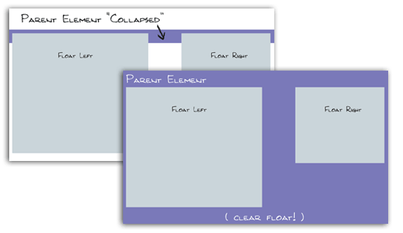

tutorial for overflow : css overflow property
problem of overflow hidden in order to clear children element's float
A Problem With Using “overflow: hidden” to Clear Floats
clear float ways on quirksmode :
link...
Further Reading
YuiBlog:clearfix Reloaded + overflow:hidden Demystified